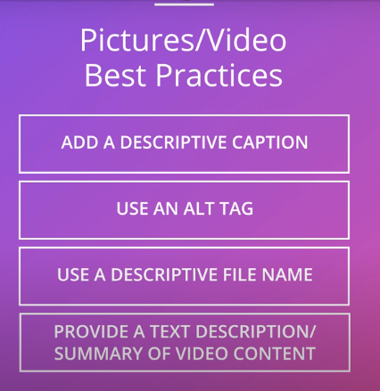
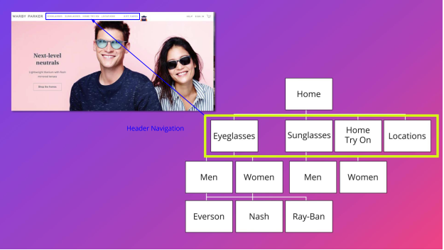
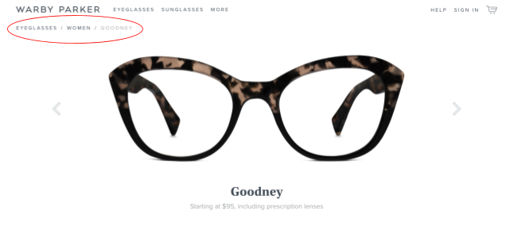

Meta tags-->pieces of text that get put inside the HTML code of a website,meta tags are a way of labeling content and guiding the search engine without interfering with the user experience
Title Tag-->Tells search engines what the content on the page is all about, it's the title that will be displayed on the search engine results page, title tag will also be shown on the top of the browser

Meta Description Tag-->Provides a summary of the content of the page(135-160 characters)


Keyword Tag-->no longer relevant or important,search engines don't pay attention to this anymore, many developers leave them blank, search engines now rely on assessing the visible text on a sites and use text analysis of that visible text to determine what is relevant

Conclusion
Your URL matters because both users and search engines get a lot of information from it.
To recap, when choosing the URL for your page, make it readable, keep it simple and descriptive, use keywords and rely on a directory structure of your site.
-----------------------------------------------------------------
Structure site
A. Follow a directory structure

B. Leave breadcrumbs

C. Provide internal links for all pages
Summary
There’s a lot to consider when you create a website and search engine optimization (SEO) should be on the top of that list. Here’s a quick summary of best practices for onsite SEO. Be sure to:
Include clear title tags
- Create unique title tags for each page
- Accurately describe the page’s content
- Use brief, but descriptive titles
Provide a Meta Description tag
- Use unique description tags for each page
- Summarize the key information per page
- Write high quality and concise descriptions
Fill in the image and video blanks
- Add descriptive captions
- Use Alt Tags
- Use descriptive file names
- Provide a transcript or summary of video content
Clearly structure your URL
- Use descriptive URLs, with words, not numbers and symbols
- Use a directory structure for your URL
Ensure a cohesive site structure
- Develop a directory structure schematic for your site, starting with the home page
- Ensure there is no orphaned content on your site